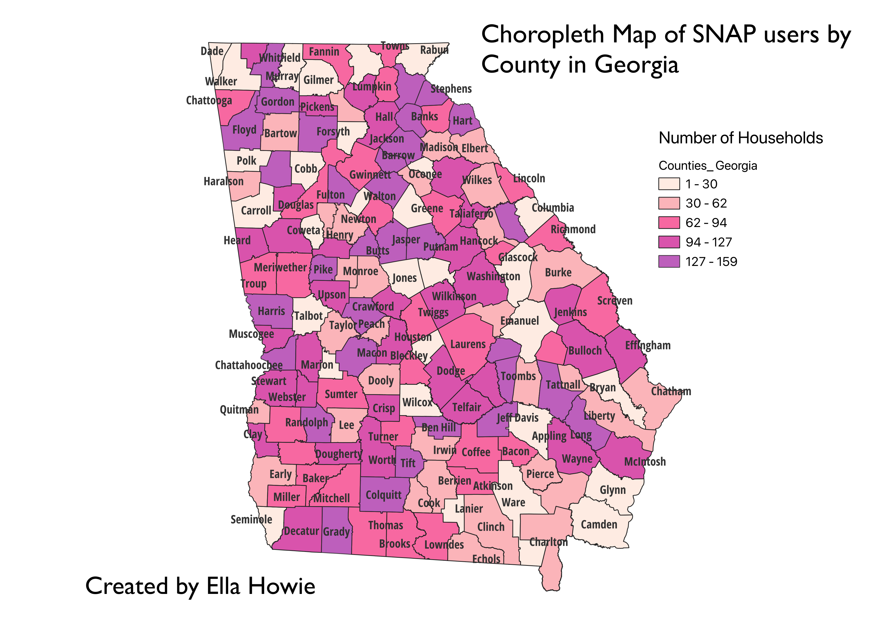
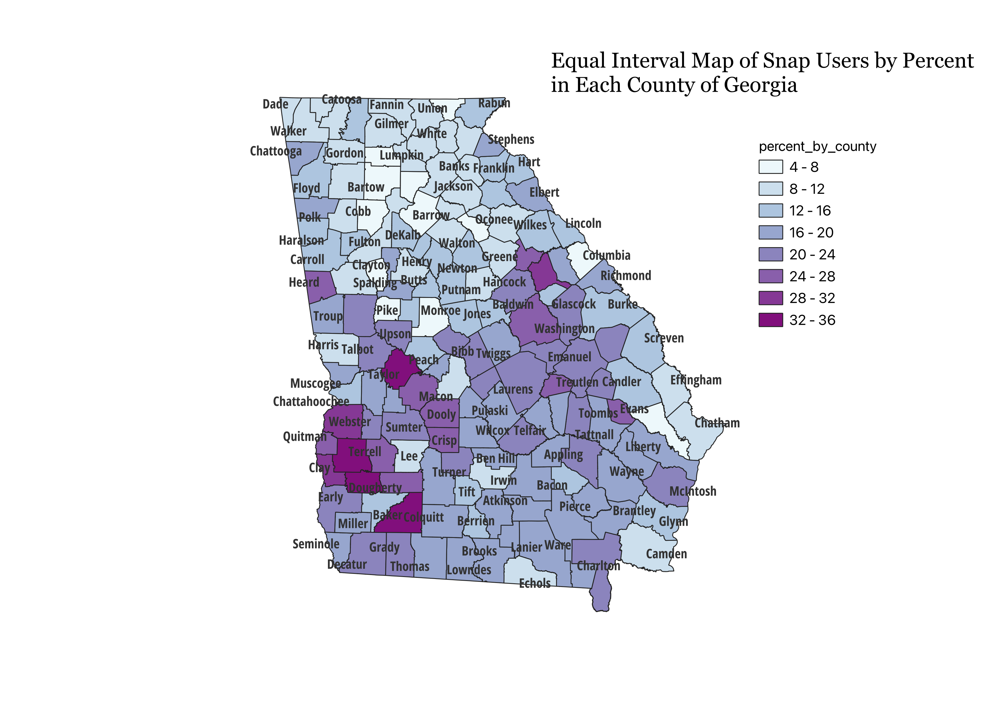
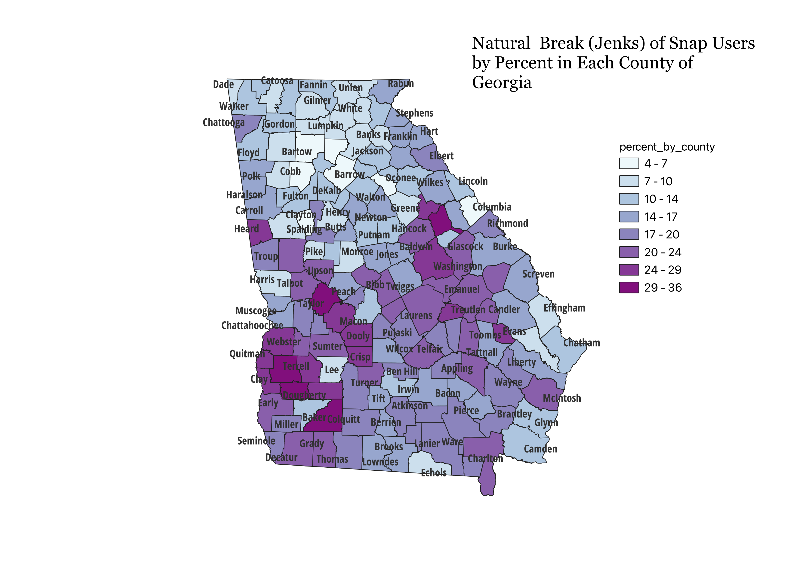
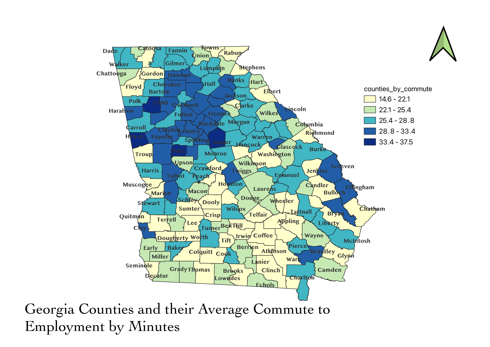

Homework 2

Link to Stream Vector Data
Streams
Link to Point GEOJSON
Point
Link to Line Vector Data
Line
Link to Polygon GEOJSON
Polygon
Homework 3
Describe in your own words how you displayed the map in different projections using QGIS
A globe can never have the same accuracy as a flat map. Therefore, in order to create our best representations of the globe when making virtual models, we must consider the region in which is being mapped and what projection is the most accurate to describe that region. The following maps show their regions of best fit and areas of high distortion. By looking at the orange circle and the red line grid, issues of area, or shape can be decided on.
Spherical Mercator
Observations - Best at the equator but expands size significantly at the poles (Greenland is way smaller than Africa)

Winkle I
Observations - Changes shape and some size as it goes away from equator to poles.

Conic Equidistant
Observations - Changes significantly in size and shapes as it gets further from the North pole towards South pole.

Cylindrical Equal Area
Observations - Equator has the most well fitted data but shapes changes significantly as you approach poles.

North Pole Azimuthal Equidistant
Observations - Changes significantly in size and shapes as it gets further from the North pole towards South pole.

Miller Cylindrical
Observations - Very uniform circles at equator and above/below until it gets to the extreme ends of the North and South pole where size and shape is distorted.

Loximuthal
Observations - Both North and South pole are distored in shape and size, however the South is more distorted in larger size.

Homework 4
Static Georeferenced Map

Interactive Tile Map
Points
Homework 5
Interactive Tile Map
Points
Homework 6

NUMBER OF HOUSEHOLDS WITH SNAP BENEFITS IN COUNTIES OF GEORGIA
The use of SNAP is among those who are food insecure. Counties with more SNAP households might be lower-income or have less accessibilty to affordable food.
Data of SNAP Users
Counties Shapefile
Homework 6.2
These maps represent a percentage of residents in each individual counties overall population who are eligble for snap. The percent was calculated by dividing the number of residents who use snap in each county by the number of people eligible to use snap in those counties.
Quantile Map or Equal Breaks Map: Data is catagorized by creating an equal amount of points in each group. It is good for avoiding outliers and representing varibility. The patterns may not be well visualized and obscure distribution.

Equal Interval Map: Divides the data range into equal catagories. It is best for linear data and is easier to visualize. It may not reflect nuances or variability.

Jenks or Natural Breaks Map: Data is grouped by clusters in the largest differences between values. It is data specific, best for highly skewed data and not useful if comparing maps built with different data.

Homework 7

NUMBER OF AVERAGE MINUTES SPENT DRIVING TO WORK IN COUNTIES OF GEORGIA
Calculating commmute time helps researchers understand where public transport is needed or further transport infrastructure. Longer times could mean more traffic, or areas that do not have much employment. I used natural breaks and did not naturalize the data, as that would of not helped. Counties can be more or less funded and are different geographically in size and terrain.
My Edited CSV Data
This data was obtained from the Bureau of Labor Stats website.
Data Source
Counties Shapefile